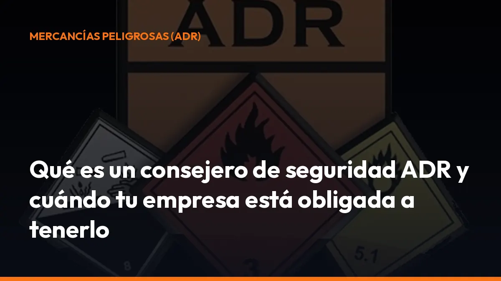

Qué es un consejero de seguridad ADR y cuándo tu empresa está obligada a tenerlo

Esta figura ayuda a prevenir accidentes, errores documentales, incumplimientos y sanciones. También garantiza que las operaciones se realizan de acuerdo con el ADR, el acuerdo internacional que regula el transporte de mercancías peligrosas por carretera.
La obligación se apoya principalmente en el Real Decreto 1566/1999, el Real Decreto 97/2014 y la Orden FOM/605/2004.
¿Qué es un consejero de seguridad ADR?
El consejero de seguridad ADR es la persona encargada de asesorar y supervisar a una empresa que trabaja con mercancías peligrosas.
Su objetivo principal es prevenir los riesgos que estas operaciones pueden generar para:
- Las personas.
- Los bienes y las instalaciones.
- Los vehículos y equipos.
- El medio ambiente.
No se trata únicamente de una persona que revisa papeles. El consejero analiza cómo se identifican, embalan, cargan, transportan y descargan las mercancías peligrosas.
También comprueba que el personal conoce los procedimientos y que la empresa dispone de medios adecuados para actuar ante una avería, un accidente o un derrame. La normativa permite que sea:
- El titular o director de la empresa.
- Una persona trabajadora de la empresa.
- Un profesional externo contratado.
- Una entidad especializada que preste este servicio.
En todos los casos debe contar con el certificado de formación correspondiente.
¿Cuándo es obligatorio tener un consejero de seguridad ADR?
La obligación aparece cuando tu empresa participa en actividades relacionadas con mercancías peligrosas reguladas por el ADR.
Debes analizarlo si realizas alguna de estas operaciones:
Transporte de mercancías peligrosas
Si eres transportista y realizas portes de mercancías peligrosas por carretera, debes comprobar si el transporte está sujeto al ADR.
Esto puede incluir gases, combustibles, productos químicos, pinturas, disolventes, residuos peligrosos y otras sustancias clasificadas por su peligrosidad.
Carga y descarga
La obligación también puede afectar a la empresa que carga o descarga la mercancía, aunque no sea la propietaria del camión.
Si tu empresa dirige o asume la responsabilidad de la operación, debes verificar si necesitas designar un consejero. Una carga incorrecta puede provocar derrames, desplazamientos de la mercancía, incompatibilidades químicas o problemas durante una inspección.
Embalado y preparación
El embalaje, el marcado y el etiquetado forman parte de la seguridad del transporte.
Si preparas bultos de mercancías peligrosas, debes asegurarte de que los envases, las etiquetas, los paneles y la documentación cumplen las condiciones aplicables.
Expedición
El expedidor es quien ordena el envío de la mercancía y aparece identificado en la documentación de transporte.
Si expides mercancías peligrosas, debes facilitar al transportista la información correcta para elegir el vehículo, preparar la carta de porte y cumplir las condiciones del ADR.
Operaciones combinadas
Una empresa puede intervenir en varias fases: compra el producto, lo embala, lo carga y contrata el transporte.
En ese caso, no basta con revisar únicamente el trabajo del conductor. Debes comprobar toda la cadena de preparación y manipulación.
¿Qué empresas pueden quedar exentas?
La obligación no se aplica de forma automática a todas las operaciones. El Real Decreto 97/2014 establece que las obligaciones relacionadas con el consejero de seguridad no se aplican cuando la actividad está cubierta por una exención del ADR.
Entre los supuestos que debes revisar están:
- Cantidades exentas: determinados transportes por debajo de los límites establecidos.
- Cantidades limitadas: mercancías preparadas bajo las condiciones específicas del ADR.
- Transportes particulares: dentro de los límites y condiciones previstos.
- Fuerzas Armadas y cuerpos de seguridad: cuando el transporte se realiza bajo su responsabilidad y régimen especial.
- Operaciones concretas excluidas: según el tipo de mercancía, cantidad, envase o modalidad de transporte.
La exención depende de datos concretos. Debes revisar la cantidad transportada, el número ONU, la clase de peligro, el tipo de embalaje y la operación realizada.
No des por hecho que estás exento solo porque transportas poca cantidad. Compruébalo antes de iniciar la actividad. Consulta el texto consolidado del Real Decreto 97/2014 en el BOE y solicita asesoramiento si tienes dudas.
¿Qué funciones tiene el consejero de seguridad ADR?
El consejero ayuda a que la empresa trabaje con procedimientos seguros y verificables.
Sus funciones más importantes son:
Revisión del cumplimiento
Examina si la empresa cumple las reglas aplicables al transporte de mercancías peligrosas.
Esto incluye la documentación, los vehículos, los equipos, el embalaje, la señalización y las operaciones de carga y descarga.
Asesoramiento operativo
Asesora a la dirección y al personal sobre la forma correcta de realizar cada operación.
Así puedes detectar un error antes de que se convierta en una incidencia, una inmovilización o una sanción.
Control de la identificación
Comprueba que las mercancías están correctamente identificadas mediante su número ONU, denominación oficial de transporte, clase y grupo de embalaje cuando corresponda.
Un dato incorrecto puede afectar a la elección del vehículo y a toda la documentación del porte.
Revisión de embalajes y etiquetas
Verifica que los envases y embalajes son adecuados y que están correctamente marcados y etiquetados.
También puede revisar la compatibilidad de los productos y las condiciones de carga en común.
Formación del personal
Comprueba que las personas implicadas reciben la formación necesaria y que esta formación queda registrada.
Esto incluye a quienes preparan la mercancía, cargan, descargan, expiden o participan en el transporte.
Procedimientos de emergencia
Ayuda a establecer instrucciones para actuar ante accidentes, fugas, incendios, derrames o incidencias durante la carga y descarga.
La respuesta debe ser rápida, ordenada y conocida por el equipo.
Informe anual
Elabora un informe anual para la dirección sobre las actividades relacionadas con mercancías peligrosas.
En carretera, la empresa debe remitirlo durante el primer trimestre del año siguiente al órgano competente de la comunidad autónoma y conservar una copia durante cinco años.
Informe de accidente
Si se produce un accidente o incidente notificable, el consejero recopila la información y prepara el informe correspondiente.
En determinados casos, la comunicación debe realizarse en un plazo máximo de 30 días naturales.
¿Qué requisitos debe cumplir el consejero de seguridad?
No necesitas una titulación universitaria concreta para presentarte al examen de consejero de seguridad ADR.
El requisito principal es superar un examen oficial sobre las obligaciones del consejero y la normativa aplicable a las mercancías peligrosas.
Las pruebas son convocadas por el órgano competente de cada Comunidad Autónoma, normalmente con una periodicidad mínima anual.
Puedes examinarte para uno o varios modos de transporte:
- Carretera.
- Ferrocarril.
- Vía navegable.
También puedes optar por distintas especialidades de mercancías peligrosas, como gases, explosivos, materias radiactivas, combustibles u otras clases.
La normativa de capacitación está desarrollada por la Orden FOM/605/2004.
¿Cuánto dura el certificado ADR?
El certificado de consejero de seguridad tiene una validez de cinco años.
Para renovarlo, debes superar una prueba de control durante el último año de vigencia del certificado, según las condiciones de la convocatoria aplicable.
No esperes a que caduque. Si el certificado vence sin renovación, el titular deja de estar habilitado para ejercer como consejero de seguridad y deberá superar de nuevo las pruebas correspondientes.
Validez de cinco años
Planifica la renovación con tiempo y guarda la fecha de caducidad en tu sistema de control documental.
Especialidades concretas
El certificado solo habilita para las especialidades y modos de transporte indicados en él.
Eficacia nacional
La habilitación tiene eficacia en todo el territorio nacional y dentro del ámbito de aplicación del ADR.
¿Qué obligaciones tiene tu empresa?
Designar un consejero es solo el primer paso. Como empresa, también debes cumplir varias obligaciones:
- Comunicación oficial: informa a la comunidad autónoma de los establecimientos, actividades, áreas de gestión y datos del consejero.
- Actualización: comunica cualquier cambio de consejero, centro de trabajo o actividad.
- Medios suficientes: facilita al consejero la información y los recursos necesarios.
- Informes anuales: presenta el informe dentro del plazo y conserva una copia durante cinco años.
- Visitas técnicas: el consejero debe realizar, como mínimo, una visita inicial y una visita anual a cada centro donde se trabajen mercancías peligrosas, con las excepciones previstas.
- Documentación organizada: conserva cartas de porte, instrucciones, certificados, registros de formación e informes.
- Coordinación: verifica que las empresas contratadas también cumplen sus obligaciones cuando les sea exigible.
La documentación digital te ayuda a localizar cada registro durante una inspección. Con Mi Carga puedes generar y guardar documentación de transporte desde el móvil, directamente desde la cabina o la oficina.
Mi Carga no sustituye al consejero de seguridad ni al cumplimiento técnico del ADR. Te ayuda a reducir errores y a mantener tus documentos disponibles cuando los necesitas.
¿Qué debes revisar antes de contratar o designar un consejero?
Utiliza esta lista rápida:
- Actividad: identifica si transportas, cargas, descargas, embalas o expides mercancías peligrosas.
- Mercancía: anota el número ONU, la clase, la cantidad y el grupo de embalaje.
- Modo: confirma si trabajas por carretera, ferrocarril o vía navegable.
- Exenciones: comprueba si la operación está cubierta por alguna exención del ADR.
- Especialidad: verifica que el certificado del consejero cubre tus mercancías.
- Centros: incluye todos los establecimientos donde se realicen estas operaciones.
- Plazos: controla la comunicación oficial y el informe anual.
- Registros: conserva la formación, las visitas, los informes y la documentación del transporte.
Proteges tu empresa antes de que aparezca el problema
El consejero de seguridad ADR no es un trámite opcional cuando tu actividad está sujeta a la normativa. Es la figura que te ayuda a prevenir riesgos, ordenar procedimientos y demostrar que trabajas conforme a la legislación.
Actúa ahora:
1. Identifica las mercancías y operaciones que realizas. 2. Comprueba si existe alguna exención. 3. Designa un consejero con la especialidad adecuada. 4. Comunica la designación a la administración competente. 5. Digitaliza y organiza tus documentos de transporte. 6. Controla las fechas de renovación y presentación de informes.
Empieza por revisar tu situación y prepara la documentación sin complicaciones. Para generar tus documentos de transporte desde el móvil, activa tu suscripción de Mi Carga por 10 €/mes + IVA o 90 €/año + IVA.
Si conduces tú solo, puedes contratar directamente. Si sois varios conductores, solicita un presupuesto cerrado. También puedes escribirnos por WhatsApp al +34 744 716 449.
¿Hablamos?
Fuentes normativas
- Real Decreto 1566/1999, de 8 de octubre, sobre consejeros de seguridad
- Real Decreto 97/2014, de 14 de febrero, sobre transporte de mercancías peligrosas por carretera
- Orden FOM/605/2004, de 27 de febrero, sobre capacitación profesional
Genera tus 10 primeros documentos gratis con Mi Carga
DeCA, carta de porte y ADR, en PDF, con QR y archivo automático en la nube.
Empezar con 10 documentos gratisArtículo informativo. Consulta siempre el caso concreto de tu operación. ¿Dudas? Escríbenos.